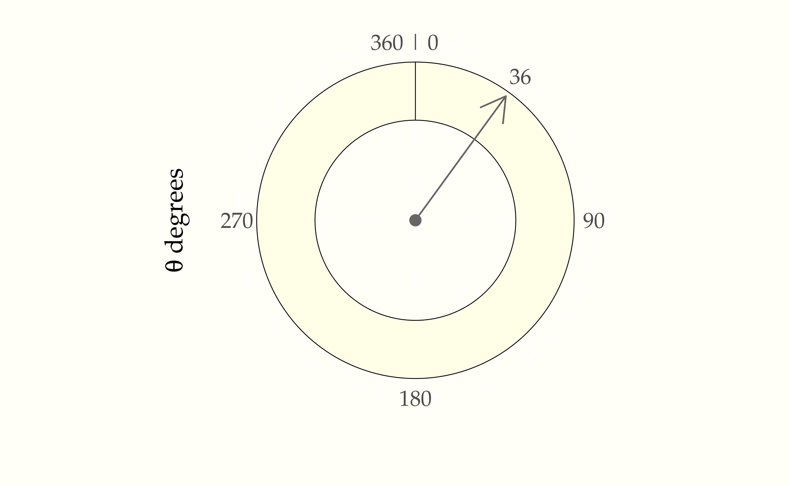
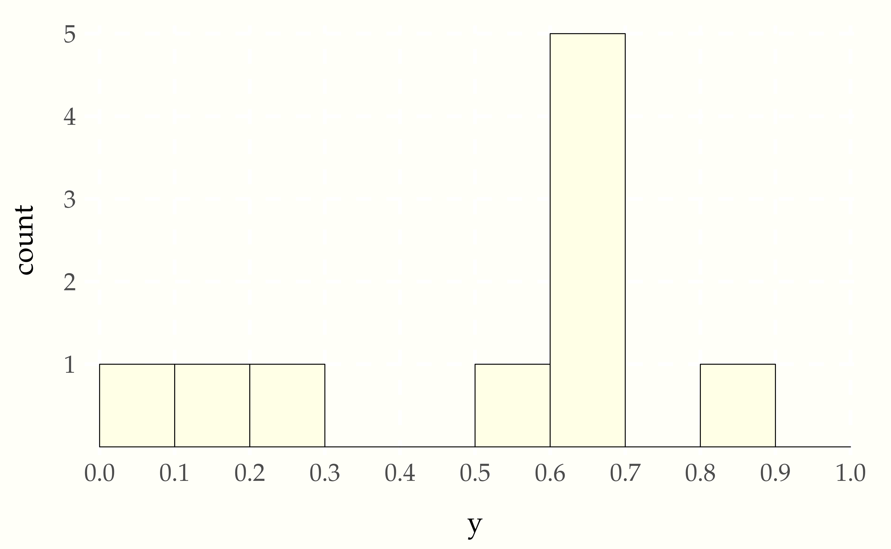
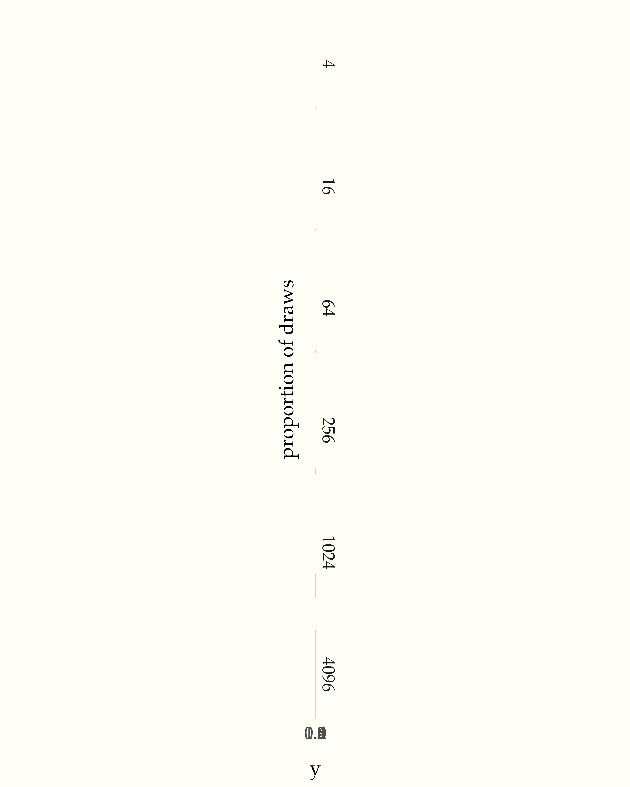
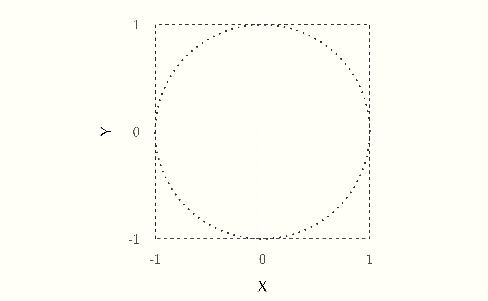
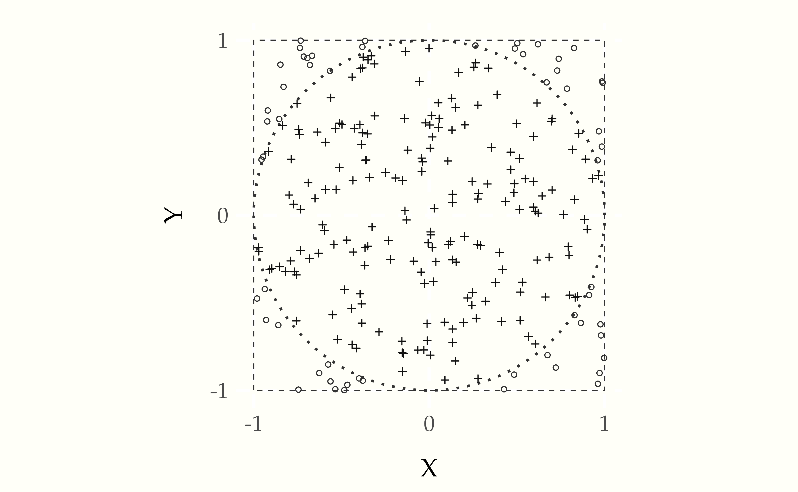
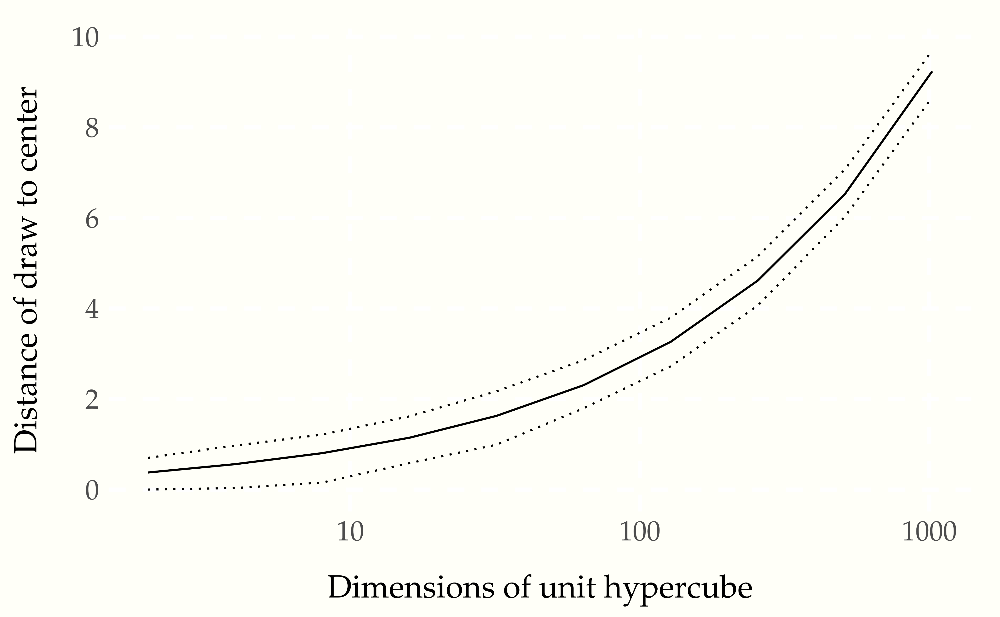

So far, we have only considered discrete random variables, i.e., variables taking only integer values. But what if we want to use random variables to represent lengths or volumes or distances or masses or concentrations or any of the other continuous properties in the physical world? We will need to generalize our approach so far.
Continuous random variables take on real values. The set of real numbers is uncountable in the sense of being strictly larger than the set of integers.86 Georg Cantor developed the technique of diagonalization to show it was impossible to have a one-to-one map from the reals to the integers, thus proving the set of reals is uncountable.
The mathematics of probability is the same for real values. Even more importantly from a practical standpoint, the way we calculate event probabilities and estimates remains the same with continuous quantities. The notion of a probability mass function, on the other hand, must be replaced by its continuous equivalent, the probability density function.
Suppose \(\Theta\) is a random variable representing the angle at which a fair spin of a spinner lands. We will use degrees and thus suppose the value of \(\Theta\) is between 0 and 36087 The end points are the same, representing a complete rotation of 360 degrees; they are labeled as such in the plot.
Figure 5.1: A spinner resting at 36 degrees, or 10% of the way around the circle. A fair spin might land anywhere between 0 and 360 degrees.
What does fair mean for continuous probabilities? At the least, we should be able to say that the probality of landing in any band is the same no matter where the band lies on the circle. That is, landing between 0 and 36 degrees should be the same as landing between 200 and 236 degrees. Also, because 36 degrees is one tenth of the way around the circle, the chance of landing in any 36 degree band has to be 10%.88 This is because the circle can be divided into ten bands to create exhaustive and exclusive intervals, the event probabilities of landing in which must be the same by fairness and must total one because they exhaust all possible outcomes. We can express that in probability notation as
\[ \mbox{Pr}[0 \leq \Theta \leq 36] \ = \ \frac{1}{10} \]
and
\[ \mbox{Pr}[200 \leq \Theta \leq 236] \ = \ \frac{1}{10}. \]
We are not talking about the probability of \(\Theta\) taking on a particular value, but rather of it falling in a particular interval.89 In general, the probability of a fair spinner \(\Theta\) falling in interval is the fraction of the circle represented by the interval, i.e., \[ \mbox{Pr}[\theta_1 \leq \Theta \leq \theta_2] = \frac{\theta_2 - \theta_1}{360}. \] for \(0 \leq \theta_1 \leq \theta_2 \leq 360.\) For continuous random variables, outcomes do not have probability mass. Instead, probability mass is assigned continuously based on the probability of a variable falling in a region.
In our first example, we took a fair spinner to land at exactly 36 degrees; it could’ve been 36.0376531 degrees or even an irrational number such as \(0.3333\cdots.\)90 When I learned decimal representations, we wrote \(0.\bar{3}\) for the decimal representation of \(\frac{1}{3}.\) What’s the probability the spinner landed on exactly 36 degrees? Paradoxically, the answer is zero.
\[ \mbox{Pr}[\Theta = 36] = 0. \]
Why must this be? If the probability of any specific outcome was greater than zero, every other possible value would have to have the same probability to satisfy fairness. But then if we summed them all up, the total would be greater than one, which is not possible. Something has to give, and that something is the idea of particular point outcomes having probability mass in a continuous distribution. The paradox arises because some number must come up, but every number has zero probability.
We will assume that our programming language comes equipped with a
function uniform_rng(L, H) that generates numbers uniformly in the
interval \([L, H]\).
For instance, the following program simulates from the uniform interval.
for (m in 1:M)
y[m] = uniform_rng(0, 1)
print 'y = ' yLet’s simulate \(M = 10\) draws and look at the result,
0.1137 0.6223 0.6093 0.6234 0.8609 0.6403 0.0095 0.2326 0.6661 0.5143These are only printed to a few decimal places. As usual, it’s hard to get a sense for the sequence of values as raw numbers. The most popular way to summarize one-dimensional data is with a histogram, as shown in the following plot.
Figure 5.2: Histogram of 10 draws from a \(\mbox{uniform}(0, 1)\) distribution.
The range of values from 0 to 1 is broken up into ten equally spaced bins, 0 to 0.1, 0.1 to 0.2, up to 0.9 to 1.0. Each bin is then drawn as a rectangle with a height proportional to the number of values that fell into the bin.
Even though the distribution draws uniformly in the interval, with only ten draws, the probability of having one draw in each bin is small,91 The first draw can be in any bin, the second in any of 9 bins, the third in any of 8 bins, and so on, yielding a probability for each bin containing a single draw of \[\prod_{n=1}^{10} \frac{n}{10} \approx 0.00036.\] whereas the probability of having many values in a single bin is relatively high.92 For example, the probability of having a bin with exactly five draws involves a choice of the distinguished bin, a choice of which of the five draws go in the distinguished bin, then the probabilities of the distinguished bins and other bins, \[{10 \choose 1} \times {10 \choose 5} \times \left(\frac{1}{10}\right)^5 \times \left(\frac{9}{10}\right)^5 \approx 0.015.\] As usual, we turn to repetition and sizing to see what’s going on.
Figure 5.3: Histograms for uniform(0, 1) samples of increasing sizes. The proportion of draws falling into each bin becomes more uniform as the sample size increases. With each sample plotted to the same height, the vertical count axis varies in scale among the plots.
Now that we have a continuous random number generator, there are all kinds of values we can compute. Here, we show how to calculuate the first few digits of \(\pi\). We’ll carry this out by formulating an event probability over some continuous random variables whose probability is a fraction of \(\pi\).
We start with the basic fact of algebra that that \(\pi\) is the area of a unit radius circle.93 The area of a circle of radius \(r\) is \(\pi \times r^2\), so when \(r = 1\), the area is \(\pi\). We then assume there are two independent, uniform random variables \(X\) and \(Y\),
\[ X, Y \sim \mbox{uniform}(-1, 1). \]
Simulations \(x^{(m)}, y^{(m)}\) of these variables pick out a point on the plane within a square bounded by -1 and 1 in both dimensions. Here is a plot of the square in which the draws will fall. Also shown is a circle of unit radius inscribed within that square. Draws may or may not fall within the circle.[Technically, the bearer of area is a disc and the line around its border a circle. Mathematicians are picky because, topologically speaking, a disc has two dimensions whereas a circle has but one.]
Figure 5.4: A unit circle (dotted line) centered at the origin is inscribed in a square (dashed lines) with axes running from -1 to 1.
A point \((x, y)\) will fall within the unit circle if94 A point falls on a circle of radius \(r\) if \(x^2 + y^2 = r^2\).
\[ x^2 + y^2 \leq 1. \]
Let’s see what this looks like with \(M = 250\) draws. The resulting plot is known as a scatterplot—it places values at their \((x, y)\) coordinates, resulting in them being “scattered.”
Figure 5.5: \(M = 250\) simulated draws of \((x^{(m)}, y^{(m)})\) from a \(\mbox{uniform}(-1, 1)\) distribution. Points within the circle are plotted using \(+\) and those outside it with \(\circ\).
For random variables \(X, Y \sim \mbox{uniform}(-1, 1)\), the event of their falling within the unit circle is \(X^2 + Y^2 \leq 1\). Because \(X\) and \(Y\) are drawn uniformly from within the square, the probability of their being within the circle is proportional to the circle’s area. The circle’s area is \(\pi\), whereas the overall area of the square is 4. So the probability of a random draw within the square being within the circle is
\[ \mbox{Pr}[X^2 + Y^2 \leq 1] = \frac{\pi}{4}. \]
We know how to estimate event probabilities using simulation. The code here is straightforward.
for (m in 1:M)
x[m] = uniform_rng(-1, 1)
y[m] = uniform_rng(-1, 1)
inside[m] = (x[m]^2 + y[m]^2 <= 1)
print 'Pr[in circle] = ' sum(inside) / M
print 'esimtated pi = ' 4 * sum(inside) / MWe recover the simulation-based estimate of \(\pi\) by multiplying the event probability of \(X^2 + Y^2 \leq 1\) by four.
Let’s run this with \(M = 1\,000\,000\) and see what we get,
Pr[in circle] = 0.784
estimated pi = 3.138We actually knew the answer ahead of time here, \(\pi \approx 3.14159\). The simulation-based estimate is on the right track.95 But not going to win any \(\pi\) digit-generating contests, either. Remember, we need one hundred times as many draws for each subsequent digit of precision using i.i.d. simulation. At least the first couple of digits are correct.
If you want to do this all the old-fashioned way with calculus, note that the top half of the circle is given by the function \(y = \sqrt{1 - x^2}\). Integrating this from \(-1\) to \(1\) and doubling it thus produces the required value,
\[ \pi = 2 \times \int_{-1}^1 \sqrt{1 - x^2} \, \mathrm{d}x. \]
Simulation-based methods are largely used in practice to solve nasty integrals without analytic solutions.
In most introductory examples, including the ones in this book, intuitions are developed based on one or two dimensions—essentially, we use what can be visualized. It turns out that intuitions based on a few dimensions are not only useless, but harmful, when extended to higher dimensions. This section attempts to explain why, and along the way, introduce the key notion for sampling of the typical set.
Working by example, let’s start with the base case of a single random variable \(X_1\) with a uniform distribution over the line in the interval \((0, 1)\),
\[ X_1 \sim \mbox{uniform}(0, 1). \]
The length of our unit line is one (hence the name), so the probability of falling in an interval is proportional to the interval’s length.96 This also explains why a point has probability zero—it has length zero.
Now extend this to two dimensions, letting the pair of random variables \((X_1, X_2)\) be uniformly distributed in the unit square, \((0, 1) \times (0, 1)\),
\[ X_1, X_2 \sim \mbox{uniform}(0, 1). \]
The area of a \(1 x 1\) square is one, so that the probability of falling in a region within that square is proportional to the area of the region.97 Thus a point or a line has zero probability in a square.
Going one dimension further, let \((X_1, X_2, X_3)\) be random variables uniformly distributed in a unit cube, \((0, 1)^3 = (0, 1) \times (0, 1) \times (0, 1)\),
\[ X_1, X_2, X_3 \sim \mbox{uniform}(0, 1). \]
The unit cube has unit volume, \(1 \times 1 \times 1 = 1\). Thus the probability of falling in a region within that cube is proportional to the volume of the region.98 Thus a plane has zero probability in a cube. This generalizes in the obvious way, so this will be the last note.
Now we can just go all the way, and let \(X = (X_1, \ldots, X_N)\) be an \(N\)-dimensional random variable generated uniformly in an \(N\)-dimensional unit hypercube, \((0, 1)^N\),
\[ X_n \sim \mbox{uniform}(0, 1) \ \ \mbox{for} \ \ n \in 1:N. \]
As before, the hypervolume is \(1 \times 1 \times \cdots \times 1 = 1\), so the probability of lying in a region of the hypercube is proportional to the hypervolume of the region.99 The fact that we go from line to square to cube and then run out of words should be a tipoff that we’re barely acquainted with high dimensions. To be fair, we have “tesseract” for a four-dimensional hypercube, but that’s a technical term that might have lain buried in introductions to geometry if not for the Marvel Universe, and even there, it was known colloquially as “the cube.”
We saw that in two dimensions, the probability of a random draw from a unit square lying in the inscribed circle was approximately 0.74. As dimensionality increases, this number goes to zero quickly. In other words, most of the probability mass (as measured by hypervolume) in high dimensions lies in the corners. Let’s see just how much by simulation.
euclidean_length = x.sqrt(sum(x^2))
for (log2_N in 1:max_log2_N)
N <- 2^log2_N
for (m in 1:M)
for (n in 1:N)
x(m)[n] = uniform_rng(-0.5, 0.5)
d(m) = euclidean_length(x(m))
mean_d[log2N] = mean(d)
min_d[log2N] = min(d)
max_d[log2N] = max(d)We take x^2 to operate elementwise on the members of x, e.g.,
\((1, 2, 3)^2 = (1, 4, 9)\). The square root, sum, and other operaitons
should be self explanatory. The Euclidean length function is being
defined with lambda abstraction, where the x. indicates that the
argument to the function is x and the result is the result of
plugging the value for x into the body, sqrt(sum(x^2)).
Let’s plot what we get out to \(1\,000\) dimensions or so.
Figure 5.6: Plot of the average distance (solid line) of a uniform draw from a hypercube to the center of the hypercube as a function of the number of dimensions. The minimum and maximum distance (dotted lines) are shown based on \(M = 10\,000\) simulations.
While it may seem intuitively from thinking in two dimensions that draws should be uniformly dispersed and thus appear near the origin, they in fact do two things that are quite surprising based on our low-dimensional intuitions,
The first fact is obvious when you consider the definition of distance is the square root of the squared dimension values, which we will write as
\[ ||x|| = \sqrt{x_1^2 + x_2^2 + \cdots + x_N^2}. \]
In this form, it is clear that as \(N\) increases, so does \(||x||\) as we simply keep adding squared terms \(x_n^2\) with each additional dimension.
Although the draws accumulate in a thin shell of distance from the origin, it would be wrong to conclude that they are anywhere near each other. They are further from each other, on average, than they are from the origin. For example, let’s simulate just for 100 dimensions,
for (m in 1:M)
for (n in 1:N)
x[n] = uniform_rng(-0.5, 0.5)
y[n] = uniform_rng(-0.5, 0.5)
d(m) = euclidean_length(x - y)
print 'min = ' min(d) '; mean = ' mean(d) '; max = ' max(d)Let’s run that for \(M = 10\,000\) and \(N = 100\) and see what we get.
min = 3.0; mean = 4.1; max = 5.0We see that the average distances between randomly generated points is even greater than the average distance to the origin.